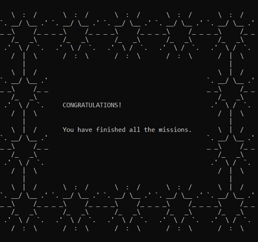
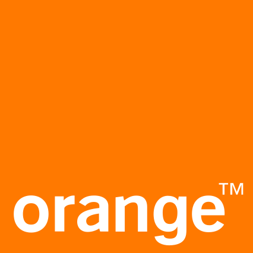

Mon parcours
Formation :
Tremplin numérique :
2024-2025
Phase 1 :
-
Culture numérique :
Apprendre à utiliser le numérique dans tous ses aspects, tableur, traitement de texte, participer à un wiki, utiliser l'IA, comprendre des données et autres.
Certification pix avec 612 pix. Voir la certification
Voir la certification -
Jeu vidéo :
Faire un jeu scratch en 2 semaines.
Projet : Jeu vidéo "Monarch Ascension" -
Photo :
Paramètres et composition d'une photo.
Projet : Photoreportage -
Conception numérique :
Conception et frabication d'objets 2D et 3D.
Projet : Labybille -
Médiation numérique :
Création d'ateliers de médiation autour de différents domaines du numérique (Les dangers et risques du numérique, Les bonne pratiques sur les réseaux sociaux, Le rôle des femmes dans internet).
Phase 2 :
-
Web :
HTML & CSS, MOOC Openclassroom.
CMS : utilisation de Wordpress.
Projet : créer son site web -
Arduino & Algorithme :
Concevoir des systèmes automatiques à partir d'un pseudo-code
Projet : Arduino -
Sécurité informatique :
MOOC de l'ANSSI. Voir la certification ANSSI
Voir la certification ANSSI -
Maintenance Systèmes & Réseaux :
Exercices de routage IP et sur la structure d'une IPV4.
Activité sur les composants d'un ordinateur.
Missions jeu "Gameshell" pour apprendre Unix Shell achevé (mission 45).Voir le résultat Gameshell

Education :
Lycée Bréquigny :
2019-2022
Fillère générale à Brequigny en spécialité "Cinéma Audio-Visuel". Enseignements sur le monde du cinéma, l'audio-visuel, les règles de la composition photo, comment s'occuper de sont matériel, en plus de pratique avec du matériel professionnel et des outils de montages vidéo. Projet film de bac (voir image ci-contre).

Stage orange labs :
2019
Apprentissages sur le fonctionnement d'un Fournisseur d'Accès Internet, visite des locaux d'orange labs, cela m'a permis de nourrir beaucoup d'intéret pour les réseaux et systèmes qui permettent le bon fonctionnement d'Internet.
Collège :
Brevet mention très bien